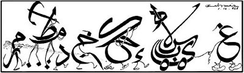

Mustafa Kemal, 1 Kasım 1928'de Türkiye Büyük Millet Meclisi'ni açarken verdiği söylevde şöyle diyordu:
"Sevgili Arkadaşlarım,
Her şeyden önce, her gelişmenin ilk yapıtaşı olan soruna değinmek isterim. Her araçtan önce, büyük Türk ulusuna, onun bütün emeklerini kısırlaştıran çorak yol dışında kolay bir okuma yazma anahtarı vermek gerekir. Büyük Türk Milleti bilgisizlikten az emekle, kısa yoldan ancak kendi güzel ve soylu diline kolay uyan böyle bir araçla sıyrılabilir. Bu okuma yazma anahtarı ancak Latin temelinden alınan Türk alfabesidir. Basit bir tecrübe, Latin esasından Türk harflerinin, Türk diline ne kadar uygun olduğunu, kentte ve köyde yaşı ilerlemiş Türk çocuklarının ne kadar kolay okuyup yazdıklarını güneş gibi ortaya çıkarmıştır.
Büyük Millet Meclisi'nin kararıyla Türk harflerinin kesinlik ve yasallık kazanması, bu ülkenin yükselme savaşımında başlı başına bir geçit olacaktır…"
Güncelleştirilmiş biçimiyle aktardığımız bu tümceler yalnız yazı devrimini duyurmakla kalmıyor, ardından gelecek olan dil devriminin de kaçınılmazlığını vurguluyordu.
Cumhuriyet yönetiminin ekinsel alanda Batı'ya yönelişini içtenlikle destekleyen bazı yayın organlarının, daha yasa çıkmadan yeni Türk harfleri ile yayına başladıkları görülmektedir. Örneğin Vakıt gazetesi, her gün "memleketimizde şahısları tanınmış birçok devlet adamının el yazılarından" örnekler yayımlayarak, bir okuma kitabı oluşturacağını açıklıyordu. Devlet Demiryolları Cer Tahrirat Amiri Mehdi Bey ile Manisa Ziraat Fen Memuru Cevat Ekrem Bey, 26 Teşrinievvel 1928 Cuma günlü Vakıt'ta el yazıları yayımlanan ülkemizin ilk "devlet adamları" oluyorlardı.

Hicret!..
Cemal Nadir, Akşam, 1. 12. 1928,
Gazeteler ve okurları, yeni dönüşümlere uyum eğilimlerini yayınlarının içerikleriyle de ortaya koymaktadırlar. Gazetelerde, okurların da katıldığı ilginç tartışmalar yer almaktadır. 1929 yılı bu açıdan oldukça hareketli bir dönem olmuştur. Vakıt gazetesinin "Gençler, Okuyor musunuz?" sorusuna verilen "Ne verdiler ki, ne istiyorlar?" yanıtı, yaşadığımız günlerdeki gelişmelerle karşılaştırma yapmak açısından son derece önemlidir. Geçen zaman içinde, edebiyat, sanat ve düşün alanlarında yetişen, uluslararası toplumun da ilgisini çeken öncüleriyle Türkiye, artık çok farklı bir yerde bulunuyor.
Gazeteleri karıştırırken, dönemin ünlülerinin kendilerini eleştiren yayınlara açıklama mektupları yazdıklarını gördük. Bir yandan gelişmişlik yaşanırken, farklı bir açıdan ülkeyi yıllarca gölgesi altına alacak hoşgörüsüzlüğün, düşünsel tutuculuğun örnekleri de aynı günlerde su yüzüne çıkıyordu. Cumhuriyet gazetesinin edebiyat sayfasını yöneten Peyami Safa'nın o sırada Ankara'da tutuklu bulunan Nâzım Hikmet'in "Yanardağ" adlı şiirini yayımlaması, yalnız sanat alanında değil, siyasal açıdan da çok önemli tartışmaların başlangıcı olmuştu. Ertesi gün aynı gazetenin birinci sayfasında yer alan bir yazıda, "Mahkûm bir adamın kaleminden çıkmış olan bu manzumenin yazı işleri müdürüne gösterilmeden yayımlandığı" belirtilerek okurlardan özür dileniyordu. Nâzım Hikmet 1929 yılında özgürlüğüne kavuştuktan sonra geldiği İstanbul'da, Peyami Sefa ve Necip Fazıl (Kısakürek) ile, düşünsel farklılıklarına karşın dostça ilişkiler içine girmişti. Nâzım Hikmet'in 1929 yılında yayımlanan "835 Satır" adlı şiir kitabı çok büyük bir ilgiyle karşılanmıştı. Yeni oluşumlar karşısında Yakup Kadri (Karaosmanoğlu) Milliyet gazetesinde Nâzım Hikmet'i ve genç kuşağın sanatçılarını çok ağır nitelemelerle yeren yazılar yayımlamıştı.
Peyami Sefa'nın yayımladığı Hareket, Zekeriya ve Sabiha (Sertel) 'in çıkardıkları Resimli Ay dergileri bu saldırılar karşısında dirençlerini sürdürüyorlardı. Ancak olayı edebiyat tartışmasından çıkararak, "komünizm propagandası ve Bolşeviklik" suçlamalarına dönüştüren Hamdullah Suphi Bey'in yazılarının Yönetim Kurulu Başkanı olduğu Türk Ocağı'ndaki gençleri etkilemesi, tartışmayı çok farklı bir alana kaydırmıştı. 7 Temmuz 1929 Pazar günü, aralarında birkaç sivil polisin de bulunduğu otuz kadar genç, Resimli Ay'ın yönetildiği basımevine geldiler, araç ve gereçleri kırıp döktüler yöneticileri tartakladılar. Çevrede kimsenin olmaması, halkın ve polisin olaylara karışmaması için özellikle bir pazar günü seçilmişti.
Olayların ardından Resimli Ay dergisinde yazıları yayımlandığı için yoğun tepkiler alan dönemin gençleri Halit Fahri (Ozansoy) ve Peyami Safa, Vakıt gazetesine gönderdikleri mektuplarında, "Biz bütün hayatımızda hiçbir siyasi teşekküle girmemiş yazarlarız" tümcesi ile kendilerini savunmaktadırlar. Komünistlik suçlamaları yöneltilen Sabiha Zekeriya ise, açıklamalarında, "Abdülhak Hamit dahi değil, Mehmet Emin milli şair demekle komünizm arasında hiç alaka yoktur. Bu bir fikirdir. Bir iddiadır. Eğer bu iddialar yanlışsa aksini ispat edin" tümcesiyle duruşunu korumakta ve saldırıların haksızlığını vurgulamaktadır. Aynı günlerde, komünistlere Rusya'ya gitmelerini öneren daha başka mektuplara da rastlanabilmektedir.
Diğer önemli bir olay da, 23 Aralık 1930'da Menemen'de yedek subaylığını yapmakta olan öğretmen Kubilay'ın Cumhuriyet karşıtı şeriat yanlıları tarafından öldürülmesidir. Çok sesliliğin gereğine inanan kimi okurlar, siyasal yaşamın yalnız Cumhuriyet Halk Fırkası (Partisi) ile yürütülemeyeceğini ve yeni partilerin kurulması gerektiğini yazıyorlardı. Kubilay Olayı'nın, 1930'da Ali Fethi Okyar tarafından Atatürk'ün önerisiyle kurulan ve hukuksal varlığını kendi kararıyla sonlandıran Serbest Fırka ile birlikte değerlendirilmesi, daha uzun yıllar tek partili yaşamın sürdürülmesi sonucunu getirecekti. Böylesine olumsuz gelişmelere karşın okurlar, "Memleketin artık cumhuriyeti tamamile benimsediği..." inancı ile, "irtica tehlikesi olamayacağını, ... gericilerle mücadele edileceğini..." kararlılıkla belirtmektedirler.
Gazeteler önem verdikleri daha başka güncel konularda da okuyucuların görüşlerini soruyorlardı. Son Posta'nın 1930'da "Yeni Çıkan Gazeteler," Cumhuriyet'in 1932'de Yunus Nadi'nin sunuşuyla başlayan "Hafta Tatilinin Pazara Alınması" gibi daha birçok tartışmaya gelen yanıtlardan ilginç bulduklarımızı kitaba aldık. Son Posta, hemen her gün, üç ya da dört ayrı başlık altında açtığı soruşturmalarla bu konudaki önceliği elinde bulunduruyordu.
Türkçenin, yazım ve konuşma dilinde Rumca, Arapça, Frenkçe sözcüklerden arındırılması okurların çok sık vurguladıkları istekler arasında. İşyerlerinin tabelalarındaki yabancı sözcüklerle birlikte yanlış yazılar da kıyasıya eleştirilmekte, doğrusunun ne olması gerektiği örneklerle anlatılmaktadır. Özellikle Son Posta gazetesinin Türkçeye yeni sözcükler kazandırılması, ezanın Türkçeye dönüştürülmesi, kütüphaneler, müzeler açılması, var olanların geliştirilerek korunması, bilimsel yayınların artırılması gibi konularda açtığı anketler okuyuculardan yoğun ilgi görmüştür. Okurlar yeni sözcükler türeterek bu dönüşümlere katılmışlardır.
1928 yılında Muhsin Ertuğrul tarafından yapımı gerçekleştirilen Ankara Postası adındaki filmde, Kuvva-i Milliyecilerle çalışan bir kuryenin katkıları sonunda başarıya ulaşan bir sadırının öyküsü anlatılıyordu. 1933 yılında Sovyet sinemacıları tarafından hazırlanan ve genç yapımcı Sergey Yutkoviç'in ürünü olan Ankara Türkiye'nin Kalbidir adlı yapım ise, Atatürk'ün isteği üzerine Cumhuriyet'in onuncu yıl kutlamaları kapsamında çekilen bir tanıtım filmiydi. Kurtuluş Savaşı sonrasında gerçekleştirilen kalkınma ve batılılaşma girişimlerinin Ankara özelinde ele alındığı filmde, Türk-Sovyet yakınlaşmasına da yer veriliyordu. Kimi okurlar, Ankara Postası ve ardından gelen Ankara Türkiye'nin Kalbidir filmlerinin, yaşadıkları kentlerde de gösterilmesini istemektedirler. Ankara Türkiye'nin Kalbidir filminde, Onuncu Yıl marşının yanı sıra Sovyetler Birliği'nin simgesi olan Enternasyonal'in de seslendirilmesi, izleyen yıllarda komünizm karşıtlarının yoğun tepkilerine ve giderek filmin yayından kaldırılmasına neden olmuştu.
Sinemaların, tiyatroların özenli çalışmaları, radyoların güçlü ve herkesi kapsayacak yayınlar yapmaları, çeşitlenip sayıları artan gazetelerin özellikle doğru bilgiler vermeleri, telefon kullanımın yaygınlaşması, okurların beklentileri arasındadır. Kısaca diyebiliriz ki okurlar, Cumhuriyet'in ekinsel dönüşümlerini beğeni ve kararlılıkla desteklemekte, modern bir yaşam özlemiyle çağdaş açılımların daha da gelişmesini istemektedirler.